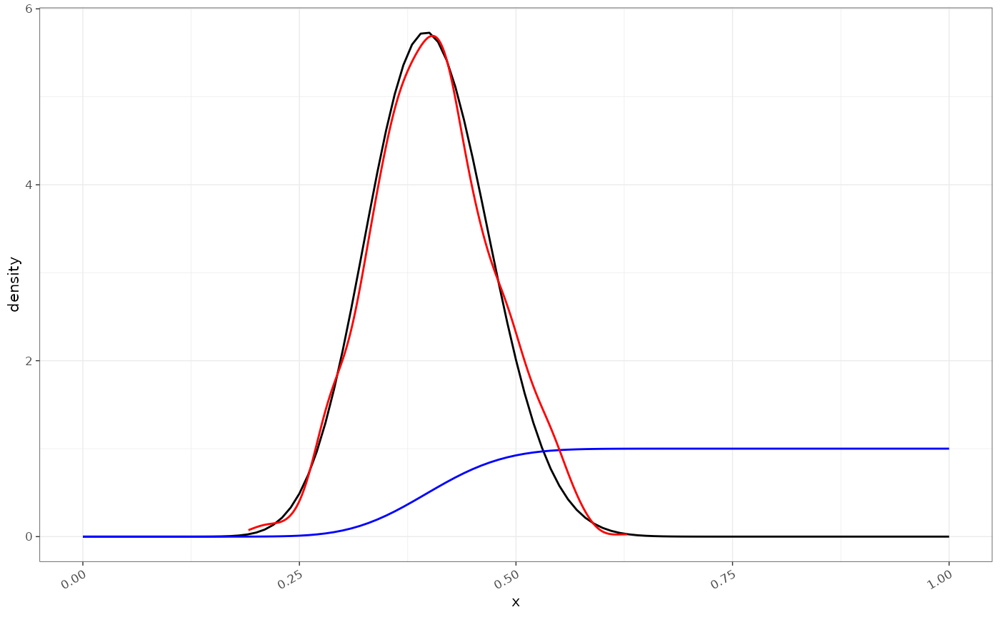
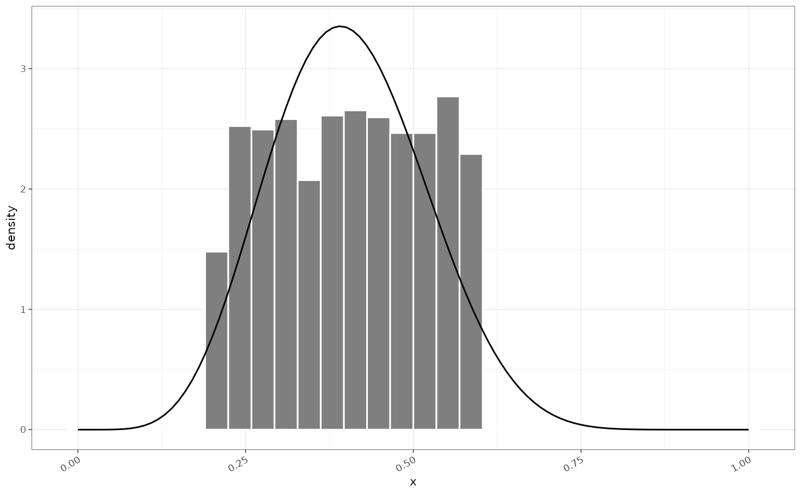

Sensitivity and specificity are estimated quantities. Typically this is from observations that are assumed to be binomially distributed. The uncertainty in the sensitivity can be described in terms of the conjugate beta distribution. For example if a test detects 80 of of 100 positives then we can calculate the uncertainty of the sensitivity estimate:
# The posterior of the conjugate beta distribution after one observation with
# no prior assumptions:
beta_dist(shape1= 80, n = 100)
#> 80.2% [71.7%—87.2%] (N=100.0)
beta_dist(shape2= 80, n = 100)
#> 19.8% [12.8%—28.3%] (N=100.0)whereas if this was based on only 10 positives the confidence intervals would be much wider:
beta_dist(shape1=8,n=10)
#> 82.0% [51.8%—97.2%] (N=10.0)beta_dist creates an S3 object that can be converted to
a tibble easily. Using a beta distribution to model the confidence
limits of a binomial is somewhat inaccurate a extremes, unless the beta
is constructed from a uniform prior - i.e. a Beta(1,1) distribution.
There is a difference between the CI derived from the completely
uninformed Beta, but for non zero values it is a good proxy.
tmp1 = tibble::as_tibble(beta_dist(shape1=0:50,n=50)) %>% dplyr::mutate(x=shape1,n=conc,method="beta")
tmp2 = binom::binom.confint(0:50, 50, method="wilson")
ggplot(dplyr::bind_rows(tmp1,tmp2), ggplot2::aes(x=mean,y=median,ymin=lower,ymax=upper, colour=mean-median))+
ggplot2::geom_abline(colour="grey50")+
ggplot2::geom_point(aes())+
ggplot2::geom_errorbar()+
ggplot2::ylab("quantile")+
ggplot2::scale_colour_gradient2(mid="black",low = "cyan", high="magenta")+
ggplot2::facet_wrap(~method)
#> Warning: Removed 51 rows containing missing values (`geom_point()`).it also has methods for getting samples, density or quantiles simply:
dist = beta_dist(shape1=20,n=50)
x = seq(0,1,length.out=101)
# density
ggplot()+
ggplot2::geom_function(fun = dist$d, xlim=c(0,1))+
ggplot2::geom_function(fun = dist$p, xlim=c(0,1), colour="blue")+
ggplot2::geom_density(aes(x = x), data=tibble::tibble(x=dist$r(1000)), colour="red")
We also sometimes may get estimates of sensitivity as an uncertain quantity provided as median with quantiles. We can fit a beta distribution to these quantiles:
beta_params(median = 0.740, lower = 0.666, upper = 0.823, confint = 0.95)
#> 74.6% [66.3%—81.9%] (N=118.1)Sometimes we may want to estimate from data. In this case we can simply fit a convex beta to data using moments. This will always work if the input is between 0 and 1 but may be inappropriate depending on the shape of the distribution.
x = stats::runif(2000, 0.2,0.6)
b = beta_fit(x)
# fitting a beta to uniform data is not very good but maybe pragmatic.
ggplot()+
ggplot2::geom_histogram(aes(x=x,y=ggplot2::after_stat(density)),data=tibble::tibble(x=x), fill="grey50",colour="white")+
ggplot2::geom_line(aes(x=x,y=b$d(x)), data=tibble::tibble(x=seq(0,1,length.out=101)))
#> `stat_bin()` using `bins = 30`. Pick better value with `binwidth`.
Although different shapes the moments of the distributions match: